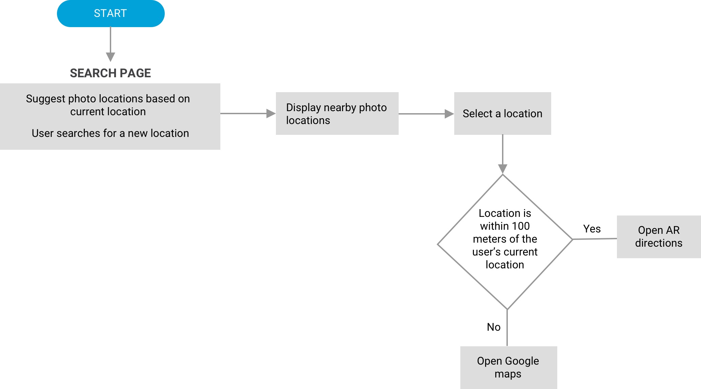
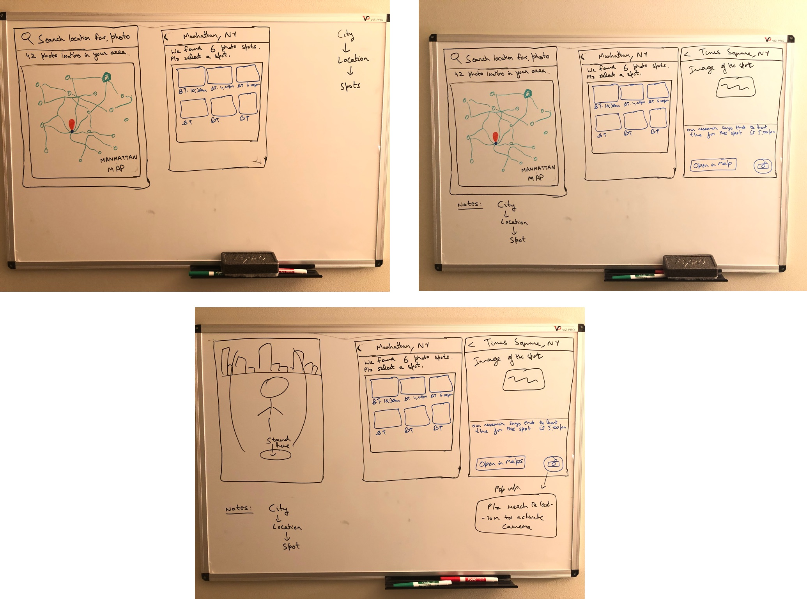
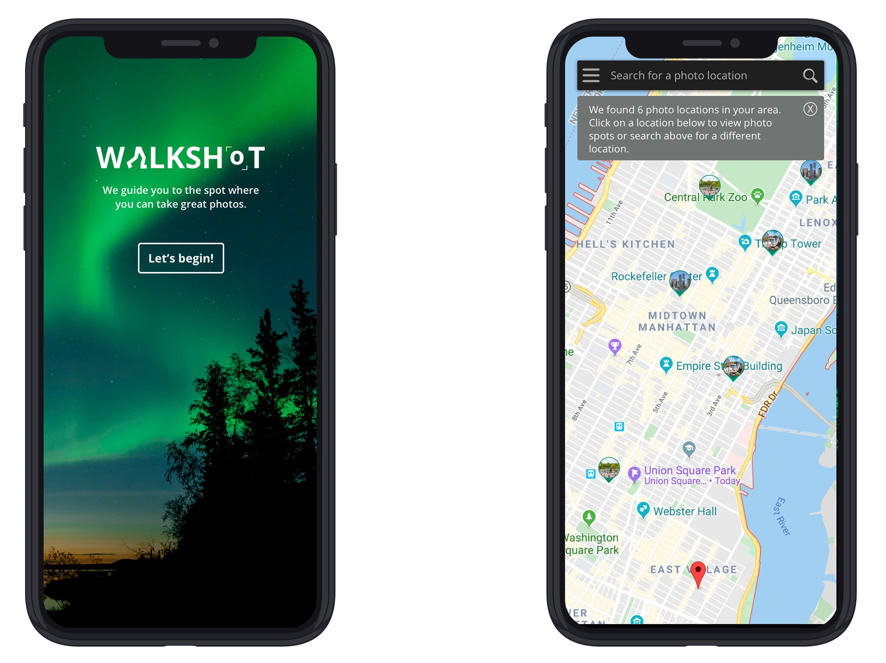
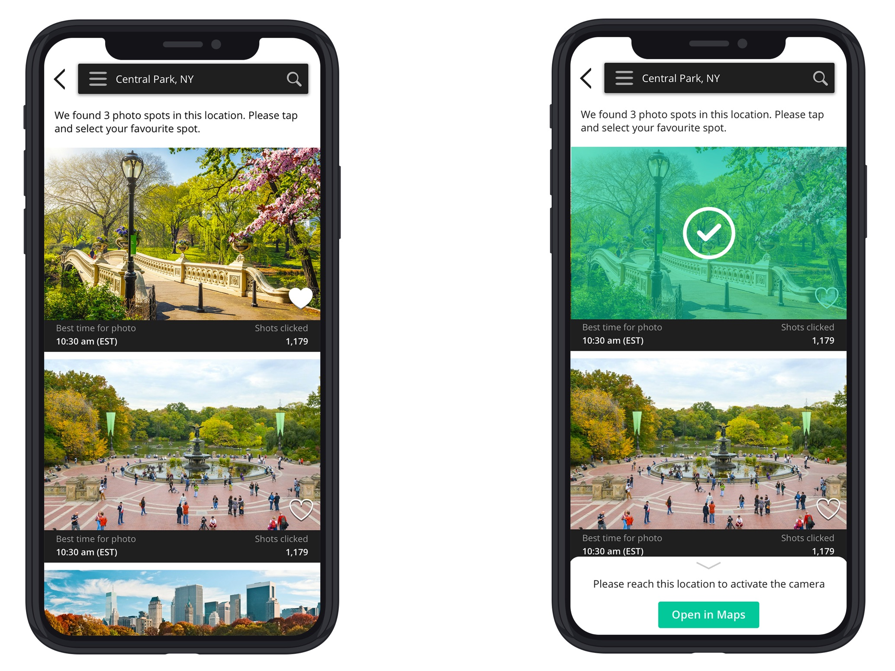
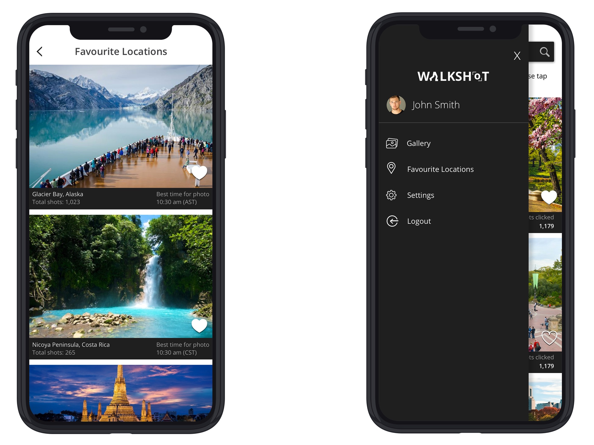
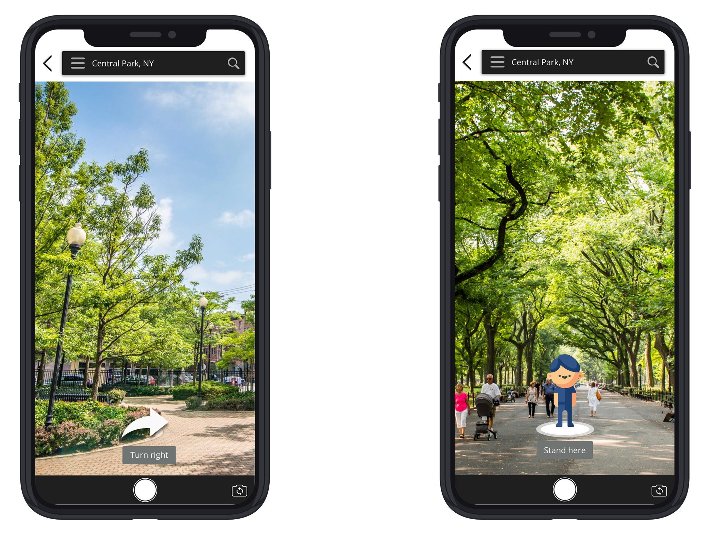
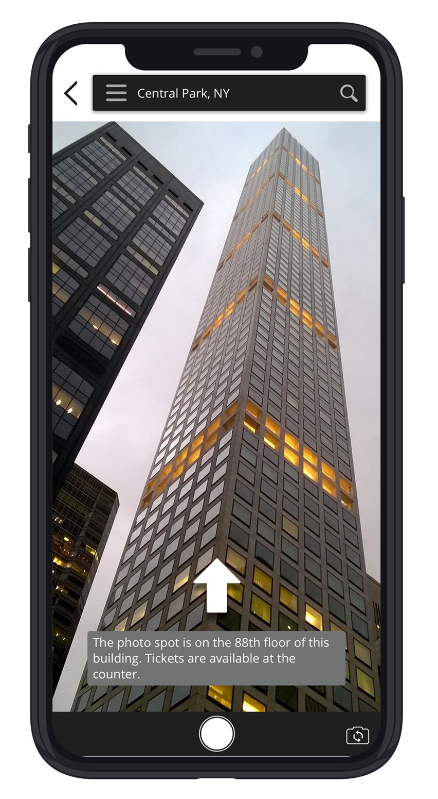

During the early days of my career, driven by my passion for photography, I aspired to create an app that could address my personal challenge of capturing photos at precise locations during the ideal time of day. While I couldn't assemble an engineering team to bring this concept to life, this app remains dear to me as one of my initial, unsolicited projects aimed at developing a mobile app tailored to my requirements. At that time, there were rarely any similar apps available, but I'm delighted to observe that the market now offers several such applications with added features.
Walkshot mobile app
Walkshot allows you to explore possible photography location at any given area from a bird’s eye view. Walkshot ignites inspiration and helps you explore the world’s greatest places shared by globally recognized photography and travel influencers. From urban rooftops to mountain vistas, the app's Location Insights go deep, giving you access to precise GPS coordinates where the photographer stood, detailed directions using Augumented Reality on how to get there, best times to go and insider photography tips specific to each location.
Research
To understand the gaps and pain points of users, I conducted a survey with 25 participants asking them what are some pain points that stop them from getting the perfect shot at a given location.
Below are the three most common responses collected:
1. Finding the perfect spot/location consumes a lot of time and effort
2. Unaware of the best time of the day for the perfect shot
3. Users forget to cover all locations in an area or cannot plan their tour accordingly
Userflows
As a solution I decided to work on the userflows to help overcome the three most common pain points and enabling the users to get that perfect shot clicked in the most efficient way possible.

Low fidelity wireframes

Mockups





Link to Prototype
https://invis.io/5KV0P6F2RFQ#/395105088_Home-Screen